Strong correspondence between five- and eight-component assignments.
MICCAI 2026 Accepted Paper · Paper 4053 · Healthcare AI
Posterior-Aware Motor Phenotyping with Multimodal Imaging Validation in Parkinson's Disease
A posterior-aware Bayesian mixture framework for visit-level Parkinson's motor-state phenotyping from MDS-UPDRS-III, validated against DaTSCAN SPECT, structural MRI, and out-of-cohort BioFIND transfer.
Official MICCAI open-access link pending public proceedings release.
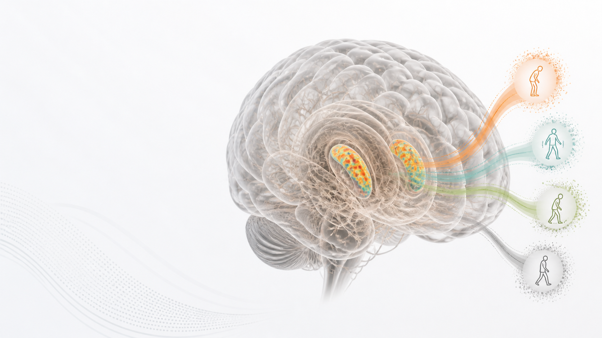
29,366
MDS-UPDRS-III assessments
1,847
PPMI participants in MICCAI analysis
2,912
predefined BGMM configurations
5
visit-level motor states
99.5%
high-confidence assignments
What the MICCAI paper contributes
A cautious state model, not an overclaimed subtype taxonomy
The paper identifies a reproducible visit-level motor-state representation while keeping posterior uncertainty visible. The strongest interpretation is practical: the model gives a compact, uncertainty-aware layer for cohort stratification and multimodal validation.
The work deliberately avoids claiming five stable biological patient subtypes. Imaging is used as downstream validation, not as clustering input, so DaTSCAN and MRI associations are convergent evidence rather than circular discovery features.
Motor states differ in striatal binding ratio patterns.
13 of 25 subcortical ROIs FDR-significant with small effect sizes.
PPMI-trained scaler and BGMM applied without refitting.
Visual map
Motor exams, posterior uncertainty, imaging, and external transfer in one flow
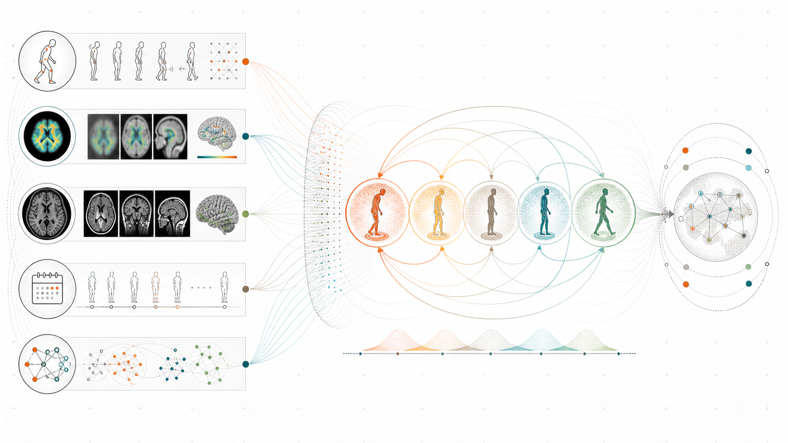
Motor-domain representation
Longitudinal MDS-UPDRS-III motor items are organized into clinically interpretable domains.
Bayesian mixture sweep
A predefined 2,912-configuration BGMM search selects an effective five-state representation.
Posterior triage
Each visit receives a posterior vector, confidence tier, entropy, and state-boundary context.
Multimodal validation
DaTSCAN and FreeSurfer MRI test whether motor states have complementary imaging correlates.
Clinical and anatomical atlas
From motor examination to multimodal brain validation
These generated atlas visuals are designed for presentations and the CVC project page: they show the body-scale motor examination vocabulary alongside the brain regions and imaging modalities used to validate the posterior motor-state representation.
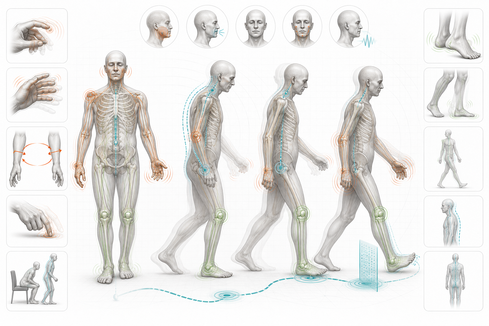
Motor examination vocabulary
Tremor
Bradykinesia
Rigidity
Axial function
Bulbar symptoms
Rest tremor
Action tremor
Postural tremor
Finger tapping
Hand movements
Pronation-supination
Toe tapping
Leg agility
Arising from chair
Gait
Freezing of gait
Postural stability
Posture
Body bradykinesia
Facial expression
Speech
Neck rigidity
Upper-limb rigidity
Lower-limb rigidity
Body map
Right arm
Left arm
Right leg
Left leg
Upper limbs
Lower limbs
Trunk
Neck
Face
Voice
Oral-motor control
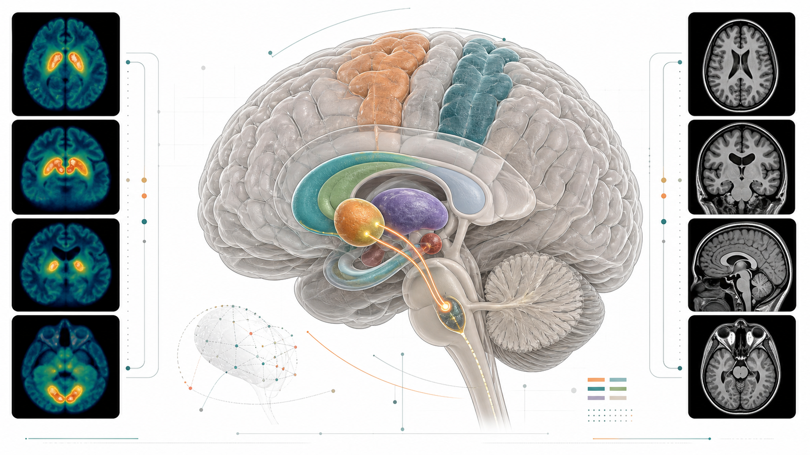
Imaging and brain-region vocabulary
Putamen
Caudate nucleus
Striatum
Dopaminergic system
Hippocampus
Thalamus
Amygdala
Lateral ventricles
Subcortical brain regions
Cortical thickness
Motor cortex
Brain MRI
DaTSCAN SPECT
T1-weighted MRI
The atlas supports the public narrative without adding new numerical claims: the empirical support remains the accepted MICCAI result figures and the extended bioRxiv analyses shown below.
2,912-configuration sweep browser
Move through the BGMM search space and watch the visual state change
This module is driven by the saved BGMM sweep artifact, not hardcoded display values. It encodes each selected configuration's diagnostics as an animated body-brain scene: active components, posterior confidence, mixed/ambiguous assignments, entropy, silhouette, and component occupancy. Component labels can permute across mixture fits, so this should be read as a sweep diagnostic browser rather than a clinical prediction.
The proceedings setting button uses the K=5, full-covariance, Dirichlet-distribution, alpha=0.1 setting described in the paper source. The artifact top row button jumps to the top stored sweep row from the saved summary artifact.
Config ID
--
Status
--
Effective k
--
Silhouette
--
High-confidence
--
Mixed/ambiguous
--
Working prototype
Posterior-state explorer
This interactive panel demonstrates the paper's posterior-triage rule. Adjust the five probabilities and the browser recomputes confidence tier, gap, entropy, and the posterior visualization. The controls are explanatory and do not predict a real patient.
Assignment tier
Textbook
Dominant state
M2 · Mild-Ax
Posterior gap
0.86
Entropy
0.42
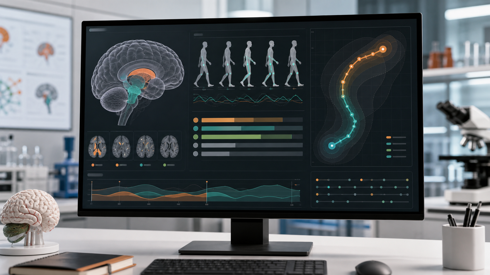
Empirical result figures
Proceedings figures and extended context
The first row uses the accepted MICCAI figures. The second row adds extended bioRxiv context for presentations and web storytelling, with links kept separate from the official proceedings release.
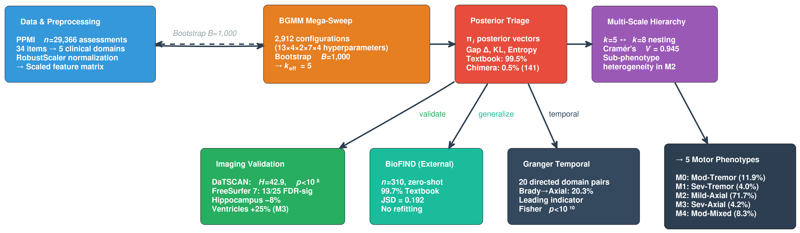
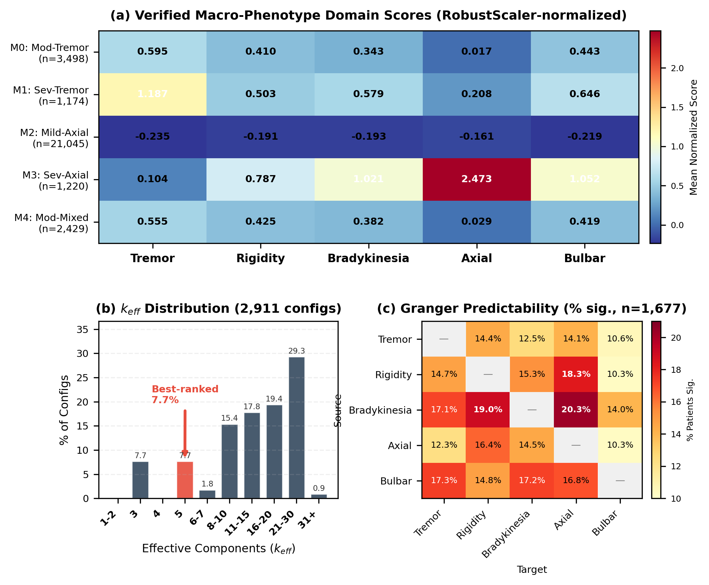
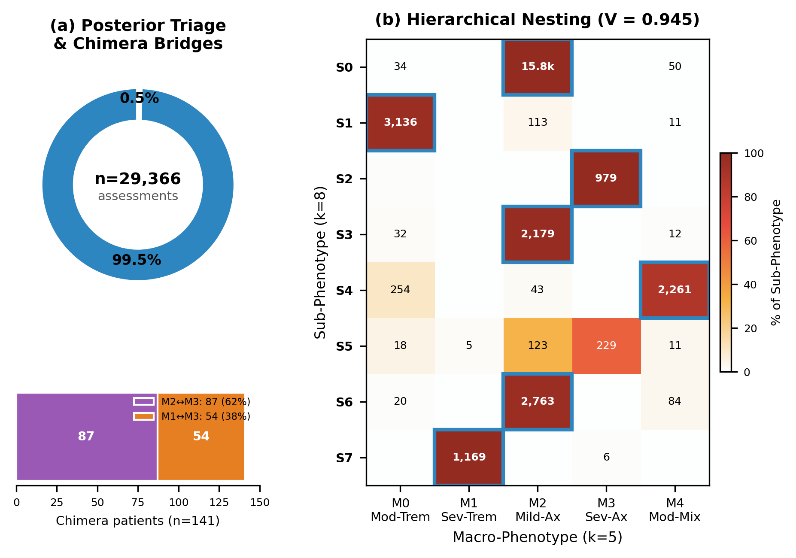
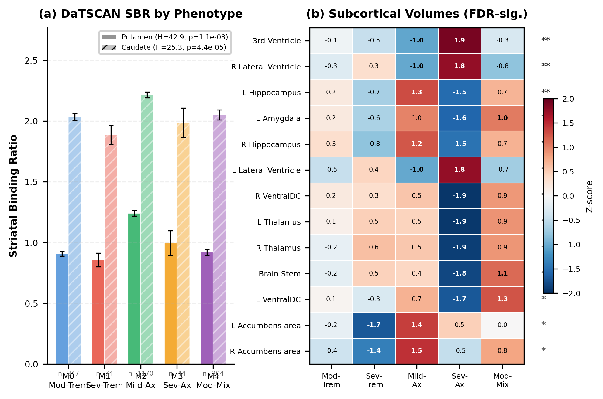
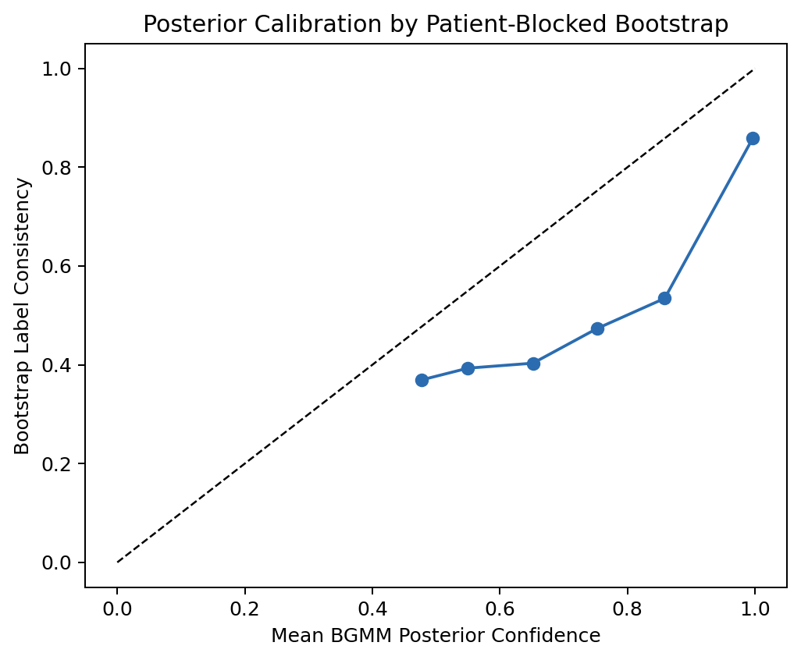
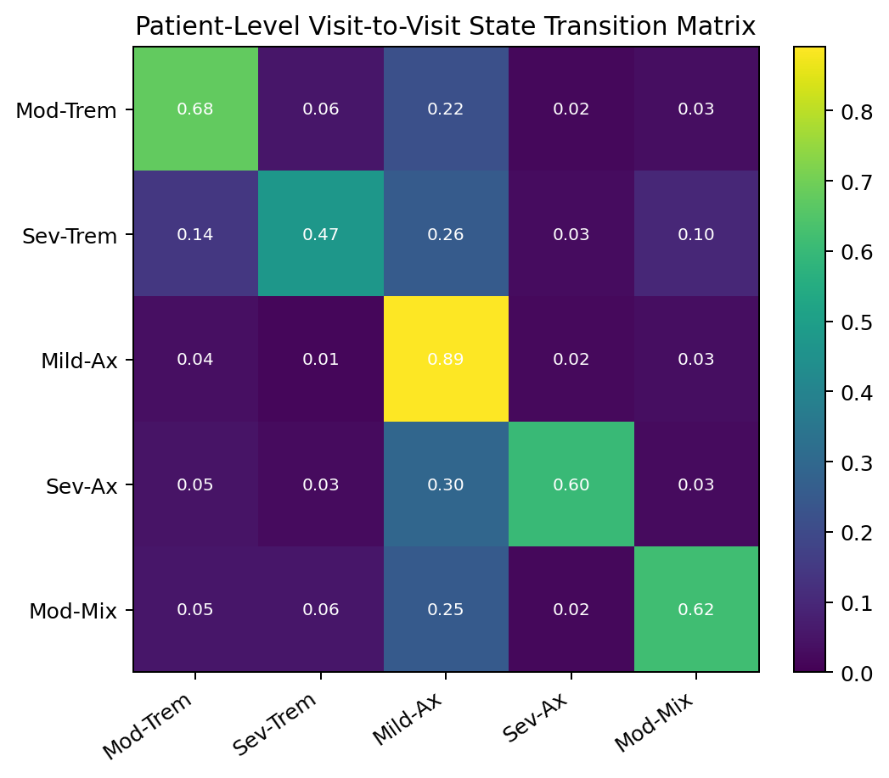
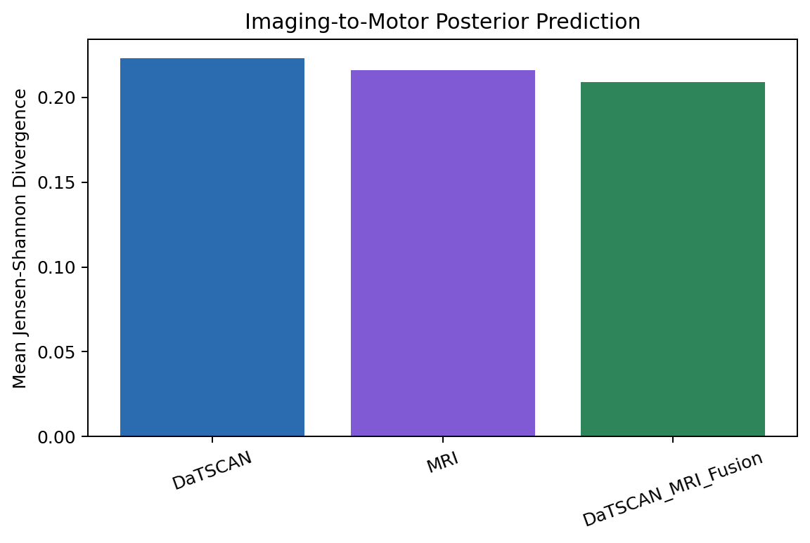
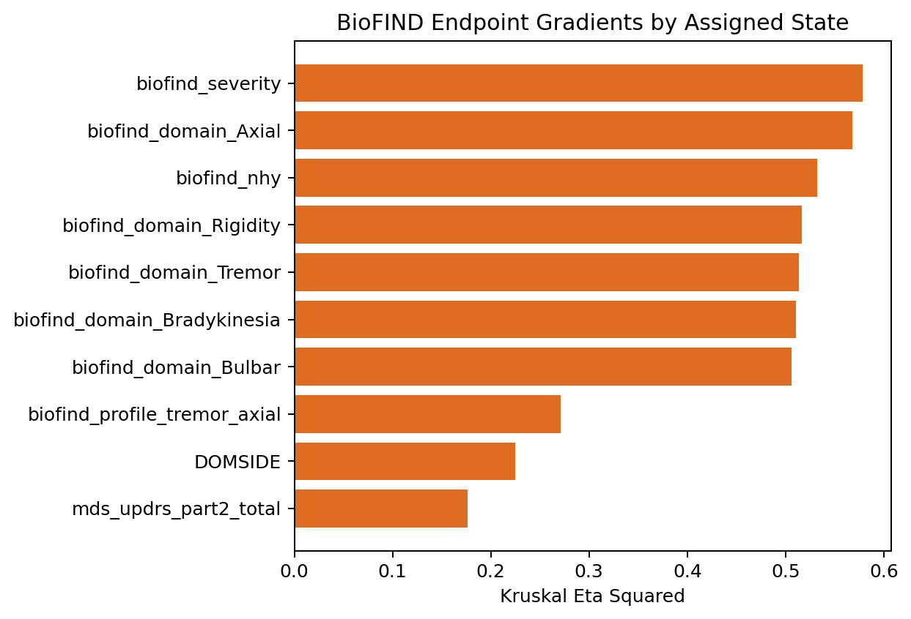
Web of Parkinson's activity
Cross-link this MICCAI page with CVC's Parkinson's ecosystem
The page is designed to sit inside the CVC project/publication network and link forward to the broader AI4PD activity without mixing proceedings claims with broader preprint work.
CVC publications
Conference entry target
Use this page as the visual project link from the CVC 2026 conference-publications list.
Existing project page Posterior-aware PD phenotypingKeep this as the deeper project page and cross-link the MICCAI accepted paper page.
AI4PD Mechanism-grounded AI for Parkinson's careConnect this accepted paper to the larger Parkinson's activity and validation narrative.
MICCAI 2026 Official conference siteReplace with the paper-specific MICCAI open-access URL once proceedings are public.
Suggested citation card
CVC publication listing text
Tirhekar, H., Yadav, P., and Bajaj, C.
Posterior-Aware Motor Phenotyping with Multimodal Imaging Validation in Parkinson's Disease.
MICCAI 2026, accepted paper 4053.